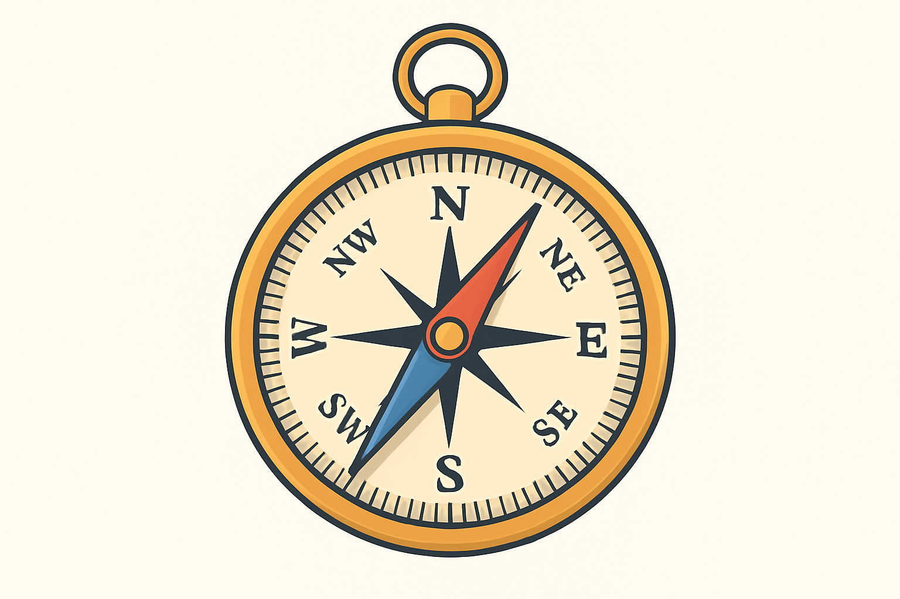

O Funcionamento da Bússola: Uma Jornada pelo Magnetismo da Terra
A bússola é um dos instrumentos mais antigos e fascinantes da humanidade, responsável por possibilitar grandes navegações, descobertas geográficas e avanços científicos. Apesar de parecer simples, sua agulha metálica alinhada ao norte magnético revela um princípio fundamental da natureza: o campo magnético da Terra.
Neste artigo, vamos entender como a bússola funciona, o que é um campo magnético e de que forma a Terra atua como um gigantesco ímã natural.
O que é uma bússola?
Uma bússola é um dispositivo que possui uma agulha imantada (um pequeno ímã) suspensa de forma a girar livremente. Essa agulha sempre se alinha ao campo magnético da Terra, apontando aproximadamente para o norte e o sul.
Graças a essa propriedade, navegadores, exploradores e cientistas puderam se orientar em regiões desconhecidas, mesmo sem pontos de referência visíveis.
O que é um campo magnético?
Um campo magnético é uma região do espaço onde forças magnéticas podem ser detectadas. Ele é gerado por partículas em movimento, como elétrons, e influencia materiais magnéticos ou cargas elétricas em movimento.
Na prática, quando aproximamos um ímã de outro, sentimos a atração ou repulsão: esse efeito é resultado da ação do campo magnético.
A Terra como um gigantesco ímã
A Terra possui um campo magnético próprio, chamado de campo geomagnético. Esse campo é gerado pelo movimento do ferro e do níquel líquidos no núcleo externo do planeta, um processo conhecido como geodínamo.
O campo magnético terrestre é semelhante ao de um ímã de barra inclinado em relação ao eixo de rotação do planeta. É por isso que o norte magnético não coincide exatamente com o norte geográfico.
Como a bússola interage com o campo magnético da Terra?
A agulha da bússola é um pequeno ímã. Assim como qualquer ímã, ela possui dois polos: norte (N) e sul (S).
Quando colocada em ambiente livre de interferências, a agulha sofre a ação do campo magnético terrestre, alinhando-se com suas linhas invisíveis. O polo norte da agulha aponta para o norte magnético da Terra, enquanto o polo sul aponta para o sul magnético.
Esse alinhamento funciona como um guia natural para orientação, seja em expedições marítimas, terrestres ou até mesmo em atividades simples como trilhas.
A diferença entre norte geográfico e norte magnético
É importante destacar que o norte geográfico (o ponto fixo onde está o eixo de rotação da Terra) não é exatamente o mesmo que o norte magnético (a direção para onde aponta a bússola).
Essa diferença é chamada de declinação magnética, e varia conforme o local do planeta. Em algumas regiões, a diferença é mínima; em outras, pode chegar a vários graus.
Aplicações modernas da bússola
Embora os GPS e satélites tenham se tornado os principais instrumentos de navegação, a bússola ainda é utilizada em:
- Expedições e trilhas em locais remotos sem sinal de GPS.
- Atividades militares como recurso de backup confiável.
- Ensino de ciências, para demonstrar o magnetismo.
- Sobrevivência e orientação natural, onde a simplicidade da bússola é sua maior vantagem.
Conclusão
A bússola é muito mais do que um simples objeto de navegação: ela é a porta de entrada para compreender o magnetismo da Terra e a forma como fenômenos naturais influenciam nossa vida.
Compreender seu funcionamento é também entender como a ciência traduz forças invisíveis em ferramentas úteis, mostrando a profunda relação entre tecnologia, natureza e conhecimento humano.